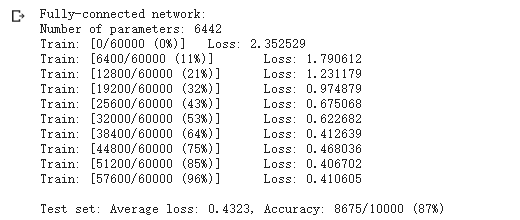
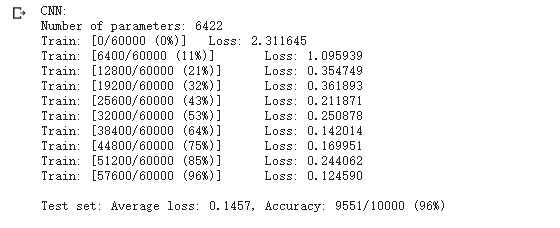

对于PyTorch的学习，基于Colab平台，主要内容来自于OUCTheoryGroup
1 2 3 4 5 6 7 8 9 10 11 12 13 14 15 16 17 import torchimport torch.nn as nnimport torch.nn.functional as Fimport torch.optim as optimfrom torchvision import datasets, transformsimport matplotlib.pyplot as pltimport numpydef get_n_params (model) : np=0 for p in list(model.parameters()): np += p.nelement() return np device = torch.device("cuda:0" if torch.cuda.is_available() else "cpu" )
1 2 3 4 5 6 7 8 9 10 11 12 13 14 15 16 17 18 19 20 21 22 23 24 25 26 27 28 29 30 31 ## 加载数据（MNIST） > PyTorch里包含了 MNIST， CIFAR10 等许多常用数据集，调用 torchvision.datasets 即可把这些数据由远程下载到本地，下面给出MNIST的使用方法： > > torchvision.datasets.MNIST(root, train=True, transform=None, target_transform=None, download=False) > > - root 为数据集下载到本地后的根目录，包括 training.pt 和 test.pt 文件 > - train，如果设置为True，从training.pt创建数据集，否则从test.pt创建。 > - download，如果设置为True, 从互联网下载数据并放到root文件夹下 > - transform, 一种函数或变换，输入PIL图片，返回变换之后的数据。 > - target_transform 一种函数或变换，输入目标，进行变换。 > > 另外值得注意的是，DataLoader是一个比较重要的类，提供的常用操作有：batch_size(每个batch的大小), shuffle(是否进行随机打乱顺序的操作), num_workers(加载数据的时候使用几个子进程) ```python input_size = 28*28 # MNIST上的图像尺寸是 28x28=784 output_size = 10 # 类别为 0 到 9 的数字，因此为十类 train_loader = torch.utils.data.DataLoader( datasets.MNIST('./data', train=True, download=True, transform=transforms.Compose( [transforms.ToTensor(), transforms.Normalize((0.1307,), (0.3081,))])), batch_size=64, shuffle=True) test_loader = torch.utils.data.DataLoader( datasets.MNIST('./data', train=False, transform=transforms.Compose([ transforms.ToTensor(), transforms.Normalize((0.1307,), (0.3081,))])), batch_size=1000, shuffle=True)
定义网络时，需要继承nn.Module，并实现它的forward方法，把网络中具有可学习参数的层放在构造函数init中。
只要在nn.Module的子类中定义了forward函数，backward函数就会自动被实现(利用autograd)。
1 2 3 4 5 6 7 8 9 10 11 12 13 14 15 16 17 18 19 20 21 22 23 24 25 26 27 28 29 30 31 32 33 34 35 36 37 38 39 40 41 42 43 44 45 46 47 48 49 50 51 52 53 54 55 56 class FC2Layer (nn.Module) : def __init__ (self, input_size, n_hidden, output_size) : super(FC2Layer, self).__init__() self.input_size = input_size self.network = nn.Sequential( nn.Linear(input_size, n_hidden), nn.ReLU(), nn.Linear(n_hidden, n_hidden), nn.ReLU(), nn.Linear(n_hidden, output_size), nn.LogSoftmax(dim=1 ) ) def forward (self, x) : x = x.view(-1 , self.input_size) return self.network(x) class CNN (nn.Module) : def __init__ (self, input_size, n_feature, output_size) : super(CNN, self).__init__() self.n_feature = n_feature self.conv1 = nn.Conv2d(in_channels=1 , out_channels=n_feature, kernel_size=5 ) self.conv2 = nn.Conv2d(n_feature, n_feature, kernel_size=5 ) self.fc1 = nn.Linear(n_feature*4 *4 , 50 ) self.fc2 = nn.Linear(50 , 10 ) def forward (self, x, verbose=False) : x = self.conv1(x) x = F.relu(x) x = F.max_pool2d(x, kernel_size=2 ) x = self.conv2(x) x = F.relu(x) x = F.max_pool2d(x, kernel_size=2 ) x = x.view(-1 , self.n_feature*4 *4 ) x = self.fc1(x) x = F.relu(x) x = self.fc2(x) x = F.log_softmax(x, dim=1 ) return x
在全连接网络中
输入尺寸为batch_size*img_size(即64x784)
其中的view函数的用法已在代码注释中解释
其中nn.Linear(in_features, out_features, bias=True)的用法如下
从输入输出的张量的shape角度来理解，相当于一个输入为[batch_size, in_features]的张量变换成了[batch_size, out_features]的输出张量。
所以可以理解全连接网络的结构为(batch_size,in_features)–>(batch_size, n_hidden)–>(batch_size,out_features)
不过实际结构中就是 in_features–> n_hidden–>out_features，但在训练函数中每次取出64个样本为一个batch为单位提取进行训练
因为全连接中的每一个节点都与下一层的所有节点相连，所以参数较大
计算一下参数就是in_features * n_hidden + n_hidden * out_features = $ 784 * 8 + 8 * 10 = 6272 + 80 = 6352$ （这里好像少算了90个参数，没有特别明白，思考ing）
在卷积神经网路中
其中nn.Conv2d(self, in_channels, out_channels, kernel_size, stride=1, padding=0, dilation=1, groups=1, bias=True))的用法如下
in_channel: 输入数据的通道数，例RGB图片通道数为3
out_channel: 输出数据的通道数，根据模型调整
kennel_size: 卷积核大小，可以是int，或tuple；kennel_size=2,意味着卷积大小(2,2)，kennel_size=（2,3），意味着卷积大小（2，3）即非正方形卷积
卷积神经网络结构可以理解为一下结构
卷积层conv1
(batch_size,height , width，in_channels)–>(batch_size,height2 , width2, n_feature)
其中卷积核大小为5x5，64x28x28x1–>64x24x24x6
进行完pooling之后，输出大小为64x12x12x6
卷积层conv2
(batch_size, height2 , width2, n_feature)–>(batch_size, height3 , width3, n_feature)
其中卷积核大小为5x5，64x12x12x6–>64x8x8x6
进行完pooling之后，输出大小为64x4x4x6
view操作
(batch_size, height3 , width3, n_feature)–>(batch_size,n_feature * 4 * 4)
卷积层fc1
nn.Linear(n_feature * 4 * 4, 50)
卷积层fc2
1 2 3 4 5 6 7 8 9 10 11 12 13 14 15 16 17 18 19 20 21 22 23 24 25 26 27 28 29 30 31 32 33 34 35 36 37 38 39 40 41 42 43 def train (model) : model.train() for batch_idx, (data, target) in enumerate(train_loader): data, target = data.to(device), target.to(device) optimizer.zero_grad() output = model(data) loss = F.nll_loss(output, target) loss.backward() optimizer.step() if batch_idx % 100 == 0 : print('Train: [{}/{} ({:.0f}%)]\tLoss: {:.6f}' .format( batch_idx * len(data), len(train_loader.dataset), 100. * batch_idx / len(train_loader), loss.item())) def test (model) : model.eval() test_loss = 0 correct = 0 for data, target in test_loader: data, target = data.to(device), target.to(device) output = model(data) test_loss += F.nll_loss(output, target, reduction='sum' ).item() pred = output.data.max(1 , keepdim=True )[1 ] correct += pred.eq(target.data.view_as(pred)).cpu().sum().item() test_loss /= len(test_loader.dataset) accuracy = 100. * correct / len(test_loader.dataset) print('\nTest set: Average loss: {:.4f}, Accuracy: {}/{} ({:.0f}%)\n' .format( test_loss, correct, len(test_loader.dataset), accuracy))
1 2 3 4 5 6 7 8 9 n_hidden = 8 model_fnn = FC2Layer(input_size, n_hidden, output_size) model_fnn.to(device) optimizer = optim.SGD(model_fnn.parameters(), lr=0.01 , momentum=0.5 ) print('Number of parameters: {}' .format(get_n_params(model_fnn))) train(model_fnn) test(model_fnn)
1 2 3 4 5 6 7 8 9 10 n_features = 6 model_cnn = CNN(input_size, n_features, output_size) model_cnn.to(device) optimizer = optim.SGD(model_cnn.parameters(), lr=0.01 , momentum=0.5 ) print('Number of parameters: {}' .format(get_n_params(model_cnn))) train(model_cnn) test(model_cnn)

